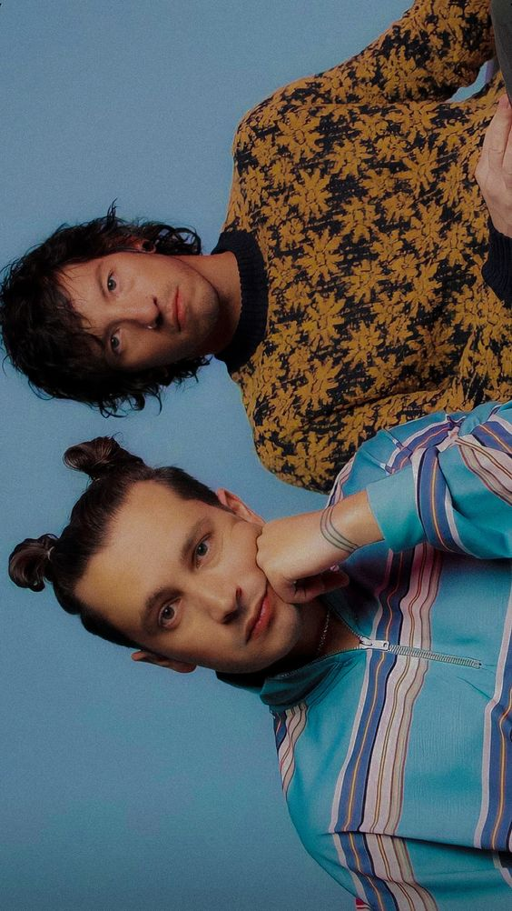

An American musical duo from Columbus, Ohio. The band was formed in 2009 by lead vocalist Tyler Joseph along with Nick Thomas and Chris Salih, who both left in 2011. Since their departure, the line-up has consisted of Joseph and drummer Josh Dun. The duo is best known for their singles "Stressed Out", "Ride", and "Heathens". The group received a Grammy Award for Best Pop Duo/Group Performance at the 59th Annual Grammy Awards for "Stressed Out". The band independently released two albums, Twenty One Pilots (2009) and Regional at Best (2011), before being signed by record label Fueled by Ramen in 2012. Their label debut, Vessel, was released in 2013 and became the second album in history on which every track received at least a gold certification, making Twenty One Pilots the first band in the history of music to see every song on two albums earn gold or platinum awards. Mas Info.
HISTORY

TØP members Tyler (left) and Josh (right) shooting for Scaled And Icy.


FOLLOW THEM